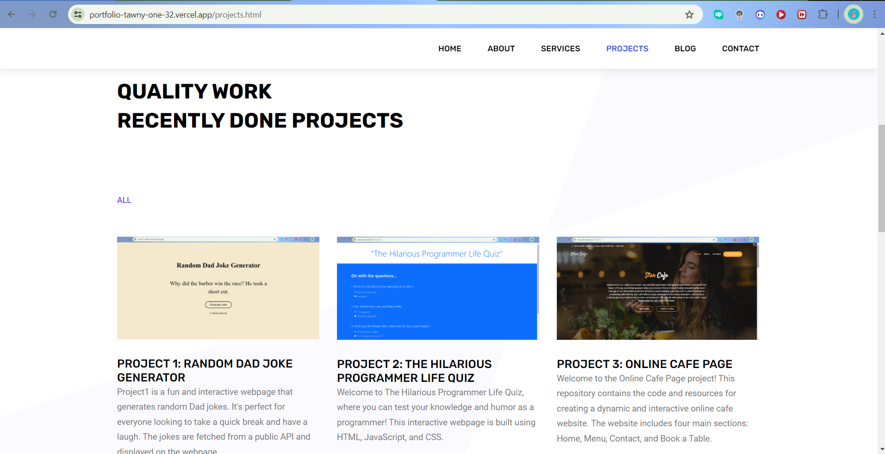

The Power of Projects: How Building Projects as a Fresher Showcases Your Skills and Work

Introduction
As a fresher entering the tech industry, it can be challenging to stand out among more experienced candidates. One of the most effective ways to demonstrate your skills and potential is by building and showcasing projects. In this blog post, I'll discuss how creating projects has helped me showcase my abilities, gain practical experience, and enhance my portfolio.
Why Projects Matter for Freshers
Practical Application of Knowledge
While theoretical knowledge is essential, practical application is what truly sets you apart. Projects allow you to apply what you've learned in real-world scenarios, demonstrating your ability to solve problems and create functional solutions.
Demonstrating Technical Skills
Projects provide tangible evidence of your technical skills. Whether it's a web application, a mobile app, or a complex algorithm, showcasing your projects highlights your proficiency with various tools and technologies.
Building Confidence
Working on projects helps build your confidence. Completing a project from start to finish shows that you can take an idea and turn it into a tangible product. This confidence will reflect in job interviews and professional interactions.
My Projects and What They Showcase
1. The Hilarious Programmer Life Quiz
Technologies Used: HTML, CSS, JavaScript
Skills Demonstrated:
Front-End Development: Creating an interactive and responsive user interface.
JavaScript Programming: Implementing quiz logic and handling user inputs.
What I Learned: This project helped me understand the importance of user experience and how to create engaging web applications.
2. Online Cafe Page
Technologies Used: HTML, CSS, JavaScript, PHP
Skills Demonstrated:
Full-Stack Development: Building both the front end and the back end of the application.
Server-Side Scripting: Using PHP to handle form submissions and manage dynamic content.
What I Learned: Working on this project taught me how to integrate front-end and back-end technologies to create a seamless user experience.
Benefits of Building Projects as a Fresher
Gaining Practical Experience
Projects provide hands-on experience that you can’t get from textbooks alone. They force you to tackle real-world problems, debug issues, and think critically about the best solutions.
Building a Strong Portfolio
A well-curated portfolio of projects showcases your abilities and dedication. It gives potential employers a clear picture of what you can do and how you approach problems. My portfolio website, for instance, serves as a central hub where I display my projects and share my journey.
Enhancing Your Resume
Listing completed projects on your resume adds substantial value. It shows that you have taken the initiative to learn and build something from scratch, which is highly regarded by employers.
Learning New Technologies
Each project is an opportunity to explore new technologies and frameworks. For example, working on different projects has allowed me to gain experience with various programming languages and development tools.
Showcasing Problem-Solving Skills
Projects often involve overcoming challenges and finding creative solutions. By discussing these challenges and how you addressed them, you can demonstrate your problem-solving skills and resilience.

Additional Benefits of Building Projects
Networking Opportunities
Sharing your projects on platforms like GitHub, LinkedIn, or personal blogs can attract attention from other professionals in the field. This can lead to networking opportunities, collaborations, and even job offers.
Portfolio Website as a Personal Brand
Your portfolio website is more than just a collection of projects; it's a representation of your personal brand. It shows your design sense, attention to detail, and professionalism. For instance, my portfolio at akshay20n.github.io/portfolio not only showcases my projects but also includes a blog where I share my insights and experiences.
Feedback and Improvement
Publishing your projects allows you to receive feedback from peers and mentors. Constructive criticism can help you identify areas for improvement and refine your skills further.
Standing Out in Interviews
Having a portfolio of projects gives you concrete examples to discuss during job interviews. It allows you to demonstrate your experience and expertise, making you stand out from other candidates who may only have theoretical knowledge.
Tips for Building Effective Projects
Start Small
Begin with manageable projects that allow you to focus on learning and applying new skills. As you gain confidence, you can take on more complex projects.
Focus on Quality
Ensure that each project is well-documented, functional, and polished. A few high-quality projects are more impressive than numerous incomplete or low-quality ones.
Share Your Work
Publish your projects on platforms like GitHub, your portfolio website, or developer communities. Sharing your work increases visibility and provides opportunities for feedback and collaboration.
Reflect and Iterate
After completing a project, take time to reflect on what you learned and how you can improve. Iterating on your projects helps you continuously refine your skills.
Future Projects and Goals
Looking ahead, I plan to:
Explore New Technologies: Experiment with new frameworks and tools to stay current with industry trends.
Collaborate with Others: Work on collaborative projects to improve my teamwork and communication skills.
Contribute to Open Source: Contribute to open source projects to give back to the community and gain experience working on larger codebases.
Document My Journey: Continue sharing my experiences and learnings through blog posts and tutorials on my portfolio website.
Conclusion
Building projects as a fresher is a powerful way to showcase your skills, gain practical experience, and create a strong portfolio. It demonstrates your initiative, technical abilities, and problem-solving skills to potential employers. Start small, focus on quality, and keep learning and improving. Your projects are a testament to your growth and potential as a developer.